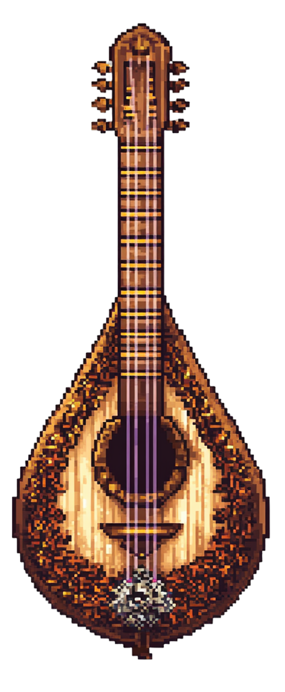

Well Met in Midsummer

Grab the lantern!
Enter the mystic, shady forest of MIDI, overgrown with luminous and lush digitally-produced sounds. These wondrous little musical files adorned the independent websites of the 1990s and 2000s. They were like spells cast of pure sound on the Web of yore…. Typing the shiny, secretive and shrinking HTML tag <bgsound src=“url.mid”> would, in earlier browsers, play a MIDI file in the background of a webpage directly. Even as Napster and MP3s gained speed, sites still existed for trading MIDI files, and I remember seeing them well into the 2000s.
Now? You rarely see anything about them anywhere unless you go on some sort of valiant quest for them directly (which you may well have done, having reached this particular site). Things have, after all, changed quite a bit. In fact, many sites disallow sharing MIDI, and some browsers now find it difficult to play them. I’m not quite sure why this happened, being fuzzy on the particularities but heavily nostalgic about the MIDI files themselves.
Anyways, fair travelers… I’m going to be doing what I can to make these eerie, awkward musical entities available to you here, though. Lit by the glow of wizardly spells cast over America Online’s ghostly ruins… you’ve entered a verdant shrine to a deeply-enchanted and endangered file format, the mysteries of which I’ve surely only begun to explore in my nostalgizing.
MIDI itself stands for musical instrument digital interface. This American-Japanese file format developed in the 1980s as a way to help computers understand music. It’s usually credited to Dave Smith at Sequential Circuits and Ikutaro Kakehashi at Roland, with the first specification finalized at a trade show demonstration in January of 1983.
Rather than transmitting actual audio, MIDI sends instructions. These include which note to play, how loud, for how long, and with what kind of expression. This makes MIDI massively flexible, enabling one small file to control entire orchestras of virtual instruments without storing any sound data itself.
MIDI created a language that was crystalline and beautiful. It allowed keyboards, synthesizers, and digital audio workstations to interconnect seamlessly, regardless of brand. This standardization meant a musician could record a performance on a keyboard, edit it on a computer, and play it back using a completely different synth. For reasons I don’t quite understand, MIDI was also used to trigger lighting effects for theme park displays - strange, but true.
Today, MIDI is still a core part of modern music technology, even if they’ve fallen out of favor on the World Wide Web. MIDI is a precise, language-like system for telling machines how to think about music, not what the music sounds like. If audio is a recording of a singer’s voice, MIDI is the sheet music they’re reading from. Any instrument can interpret it, in infinite ways.
Websites in early days of the World Wide Web often featured autoplaying MIDI files in the background. I have no plans to include autoplay here, but you can play files here, and download them, for sure! I am trying to collect and curate all the major “classics” of MIDI music from my childhood here, as well as some other fun MIDI files I’ve been able to find, information about what MIDI means and more that I am able to find as I learn the why of how and the how of why these arcane spells masquerading as audio files have mostly disappeared from the web.
Hark, and Listen Well!!
Canyon.MID
Hear well the glorious echoes of ages past! Certain MID files were included as part of the operating system back in the 1990s. These would quickly become fun fixtures of my childhood. Canyon.MID, for example, also known as “Trip Through the Grand Canyon,” was composed by George Stone to promote a now-defunct media application called Passport Designs.
I never used the latter, but listened to the the former alongside many of the other .MID files available on my operating system for free as a child. These included one simply called Passport.MID, too, all of which are thankfully now preserved on the Web. Check out these absolute bangers, which you can download as a zipped collection here or one by one below!
Wondering how I managed to play a .MID file in your browser? It was tricky, and I don't understand it well, myself! For more information, see the html-midi-player repository on GitHub, by people smarter than me...
Legends of MIDI
The inaugural MIDI connection occurred on January 17, 1983.
This was between a Sequential Circuits Prophet-600 and a Roland Jupiter-6 at a National Association of Music Merchants trade show. This was both a test and a demonstration of the concept of MIDI, showing how MIDI allowed different brands to communicate with ease, finally.
Online, voiceless MIDI versions exist of many popular songs from the late 1990s.
These were shared in addition to, or in lieu of, the later (and more popular) MP3 versions which featured lyrics. Many of these songs are difficult to recognize, but plenty do sound just fine without a vocal track!
MIDI once provided the soundtrack to many late 1990s and even early 2000s websites.
The <bgsound src=“file.mid”> tag allowed webmasters to insert MIDI files to automatically play in the background of their websites. This was widely supported by the earlier browsers, but quickly fell out of favor, rendering the tag superfluous in all but the oldest of setups.
MIDI is actually difficult for modern browsers to play when compared to other sound files.
MP3, WAV, and similar tend to play within a browser fairly easily. Not so with MIDI, which is no longer as widely supported as it once was. Now, smarter people than me have made workarounds available to play MIDI in the browser.
MIDI are extremely versatile.
MIDI uses the same protocol to command lighting rigs, fog machines, and even some fountain displays. Each special effects event functions almost like a musical note of sorts. These particular MIDI have become a part of theme park live displays and similar environments.
Is MIDI supernatural?
Possibly. There is some anecdotal evidence that suggests MIDI files are totally haunted at times. At very least, we know MIDI itself lends a peculiar ambiance to any situation, whether online or off. What does it mean? Who knows! You figure it out! Because I sure have no idea!
Is this Satire?
Is this site satire? Surely not the majority of it! Does the musical instrument digital interface file format really exist? Yes, and it definitely has some strange properties. That said, well, whether or not one actually believes MIDI files to be significant in any particular way is up for debate. And yes, it’s possible this site overstates the shimmery weirdness of MIDI slightly… cope…
Paths Outwards

These are indie web or adjacent sites that feature or associate strongly with MIDI, and were therefore worth a mention!